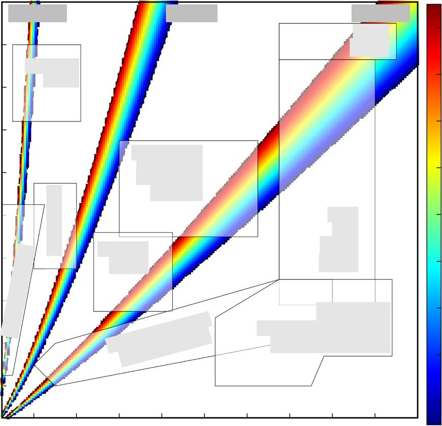

<!DOCTYPE html><html lang="en-us"><head><meta charset="utf-8"><meta name="viewport" content="width=device-width, initial-scale=1"><meta name="description" content="Space research is shifting its focus from low-gravity platforms to Moon and Mars exploration, requiring advanced habitat construction. This paper proposes to in"><title>Numerical Analysis of Coaxially 3D Printed Lunar Habitats: Integrating Regolith and PCM for Passive Temperature Control | Md. Tusher Mollah</title><link rel="stylesheet" href="/css/vendor-bundle.min.047268c6dd09ad74ba54a0ba71837064.css"><link rel="stylesheet" href="/css/wowchemy.042e26407c9e383d96a1f26d6787c686.css">
<style>
.pub-card-compact{border:1px solid #e7edf5;border-radius:12px;padding:1rem;margin-bottom:1rem;background:#fff;box-shadow:0 3px 14px rgba(0,0,0,.035)}
.pub-card-compact h3{font-size:1.05rem;margin:.1rem 0 .45rem}.pub-card-compact .meta{color:#5a6472;font-size:.92rem}.pub-actions a,.paper-links a{margin:0 .3rem .35rem 0}.figure-gallery{display:grid;grid-template-columns:repeat(auto-fit,minmax(230px,1fr));gap:1rem;margin-top:1rem}.figure-card{border:1px solid #e7edf5;border-radius:12px;padding:.6rem;background:#fff;box-shadow:0 3px 14px rgba(0,0,0,.035)}.figure-card img{width:100%;height:210px;object-fit:contain;border-radius:8px;background:#fafafa}.pub-hero{border:1px solid #e7edf5;border-radius:14px;padding:1.25rem;background:#fff;box-shadow:0 4px 18px rgba(0,0,0,.04)}.publication-type-heading{margin-top:2rem;border-bottom:1px solid #e6edf5;padding-bottom:.4rem}.featured-figure{max-width:100%;border-radius:12px;border:1px solid #e6edf5;background:#fff;margin:1rem 0}.fig-note{color:#5a6472;font-size:.95rem;margin-top:.6rem}
</style></head><body id="top" data-spy="scroll" data-offset="70" data-target="#navbar-main"><nav class="navbar navbar-expand-lg navbar-light compensate-for-scrollbar" id="navbar-main"><div class="container-xl"><div class="d-none d-lg-inline-flex"><a class="navbar-brand" href="/">Md. Tusher Mollah</a></div><button type="button" class="navbar-toggler" data-toggle="collapse" data-target="#navbar-content"><span><i class="fas fa-bars"></i></span></button><div class="navbar-brand-mobile-wrapper d-inline-flex d-lg-none"><a class="navbar-brand" href="/">Md. Tusher Mollah</a></div><div class="navbar-collapse main-menu-item collapse justify-content-end" id="navbar-content"><ul class="navbar-nav d-md-inline-flex"><li class="nav-item"><a class="nav-link" href="/#about"><span>Home</span></a></li><li class="nav-item"><a class="nav-link" href="/publication/"><span>Publications</span></a></li><li class="nav-item"><a class="nav-link" href="/#conference-participation"><span>Conference</span></a></li><li class="nav-item"><a class="nav-link" href="/#contact"><span>Contact</span></a></li></ul></div></div></nav><div class="universal-wrapper pt-3"><article class="article"><header><h1>Numerical Analysis of Coaxially 3D Printed Lunar Habitats: Integrating Regolith and PCM for Passive Temperature Control</h1><div class="article-metadata"><span>A.B. Kachalov, P.S. Sánchez, M.T. Mollah, J.M. Ezquerro, J. Spangenberg, B. Šeta</span></div></header><div class="pub-hero"><p><strong>Microgravity Science and Technology 37, 38</strong> (2025)</p><p class="paper-links"><a class="btn btn-outline-primary btn-page-header btn-sm" href="https://doi.org/https://doi.org/10.1007/s12217-025-10194-4" target="_blank" rel="noopener">DOI</a> <a class="btn btn-outline-primary btn-page-header btn-sm" href="https://doi.org/10.1007/s12217-025-10194-4" target="_blank" rel="noopener">Paper URL</a> <a class="btn btn-outline-primary btn-page-header btn-sm" href="/papers/journal/27%202025%20Kachalov%20et%20al.%20-%20Numerical%20Analysis%20of%20Coaxially%203D%20Printed%20Lunar%20Habitats.pdf" target="_blank" rel="noopener">PDF</a> <a class="btn btn-outline-primary btn-page-header btn-sm" href="/publication/numerical-analysis-of-coaxially-3d-printed-lunar-habitats-integrating-regolith/cite.bib">Cite</a></p><h3>Abstract</h3><p>Space research is shifting its focus from low-gravity platforms to Moon and Mars exploration, requiring advanced habitat construction. This paper proposes to integrate the 3D printing of regolith and Phase Change Materials (PCM), with a particular interest in lunar habitats. A coaxial printing approach is numerically analyzed, enabling the simultaneous deposition of a regolith shell, providing structural integrity, and a PCM core that helps regulate the interior habitat temperature in a passive manner. Simulations show that 3D printing with a coaxial nozzle can effectively control the shell-core (internal) structure of the habitat wall by adjusting printing parameters or by constructing multi-strand composite walls. The PCM core becomes thicker when using a smaller layer height or a higher extrusion speed during printing. We then examine the expected thermal response of the habitat, initially made of pure regolith and later incorporating the PCM. With just regolith, results indicate that one can select adequate thermo-optical properties at the wall external boundary, and wall thickness, to control the mean temperature in the interior, and associated fluctuations, respectively. Incorporating the PCM, either in single or multiple regolith-PCM strands, is shown to effectively stabilize this internal temperature (Ti →0 K), improving thermal performance and habitat design, and reducing the quantity of required regolith and binder. Since binder has to be brought from Earth, this reduction can be a major factor in enabling sustainable construction on the Moon and beyond.</p><h3>Figures from this paper</h3><div class="figure-gallery"><div class="figure-card"><a href="figures/fig1.jpg" target="_blank" rel="noopener"></a><div><strong>Figure 1</strong></div></div><div class="figure-card"><a href="figures/fig2.jpg" target="_blank" rel="noopener"></a><div><strong>Figure 2</strong></div></div><div class="figure-card"><a href="figures/fig3.jpg" target="_blank" rel="noopener"></a><div><strong>Figure 3</strong></div></div><div class="figure-card"><a href="figures/fig4.jpg" target="_blank" rel="noopener"></a><div><strong>Figure 4</strong></div></div></div><h3>Citation</h3><pre><code>@article{numerical_analysis_of_coaxially_3d_printed_lunar_habitats_integrating_regolith,
  title = {Numerical Analysis of Coaxially 3D Printed Lunar Habitats: Integrating Regolith and PCM for Passive Temperature Control},
  author = {A.B. Kachalov, P.S. Sánchez, M.T. Mollah, J.M. Ezquerro, J. Spangenberg, B. Šeta},
  journal = {Microgravity Science and Technology 37, 38},
  year = {2025},
  doi = {https://doi.org/10.1007/s12217-025-10194-4}
}
</code></pre><p><a href="/publication/">← Back to complete publication list</a></p></div></article></div><script src="/js/vendor-bundle.min.f64289d8217e08e3afcd597d60836062.js"></script></body></html>